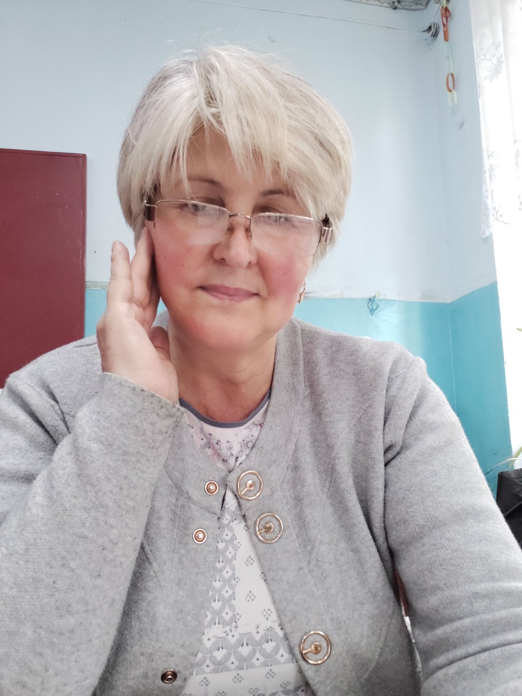

Țaulean Ema
Profesorul cursului
Site-ul dat a fost creat cu scopul de a încuraja elevii să studieze informatica. Elevii vor putea consulta platforma în timpul liber sau să revină la careva teme care nu au fost clare pe parcursul lecției. Platforma este deschisă pentru toți elevii și poate fi utilizată atât cât de pe calculator de masă, laptop cât și dispozitiv mobil. Temele/Modulele sunt împărțite pe clase. Succese tuturor elevilor! Pagina cu teme poate fi accesată AICI.